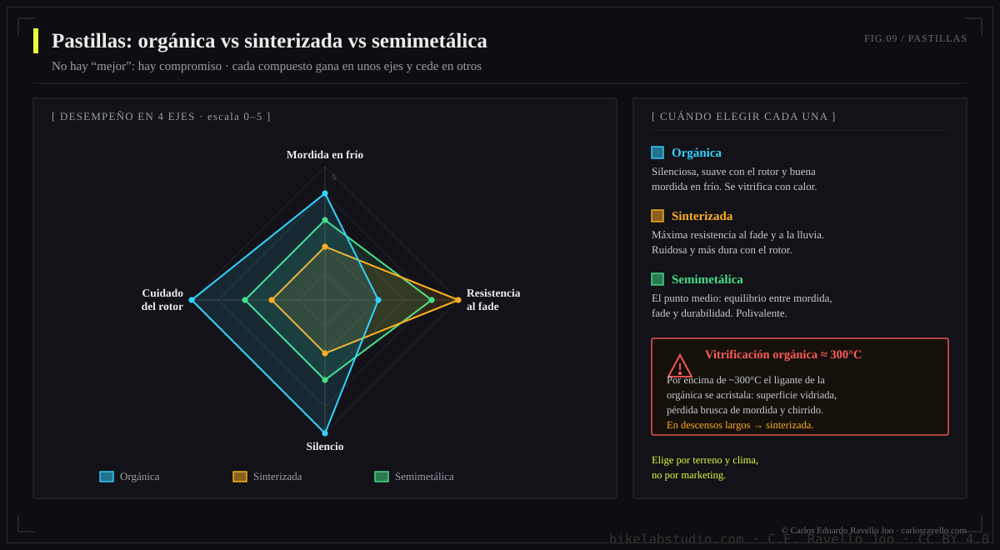
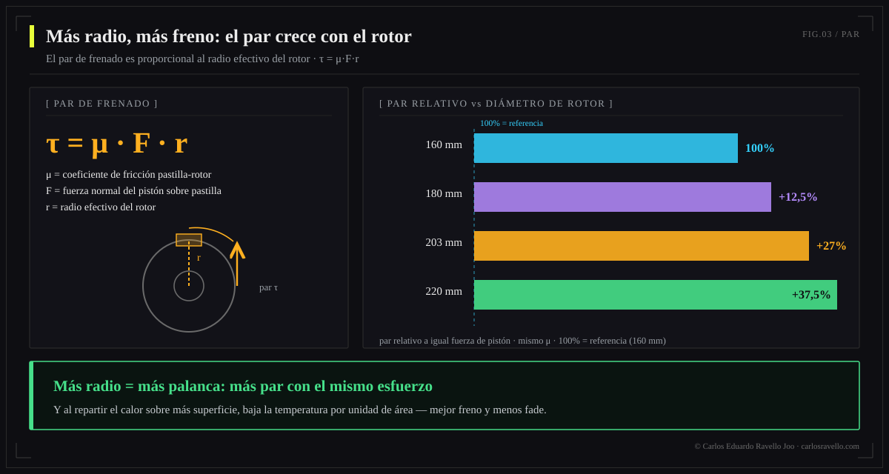
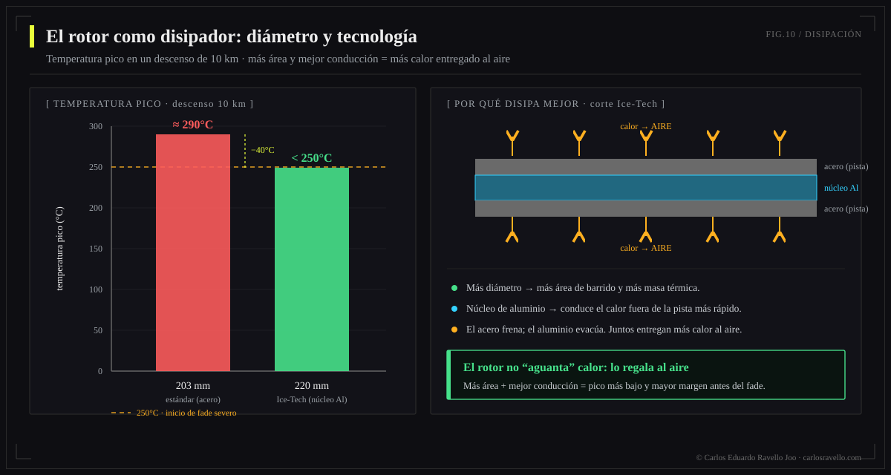

La pastilla define cómo muerde y el rotor define cuánto par y cuánto calor aguantas. Orgánicas: mordida en frío y silencio, pero se glasean (~300°C) y duran menos → trail seco/ciudad. Metálicas (sinterizadas): resisten calor y agua, duran más → descenso, lluvia, barro. El diámetro del rotor manda en bajadas largas: pasar de 160 a 203 mm sube el par ≈27% y disipa más calor, evitando el fade. Elige el par compuesto+diámetro según tu disciplina, no por defecto.
Capítulo de fricción y disipación de la Enciclopedia del Freno Hidráulico. El fluido y los pistones aprietan; pero quien convierte ese apriete en frenada —y en calor— son la pastilla y el rotor. Aquí se gana o se pierde una bajada.

Compuestos de pastilla: orgánica, metálica, semimetálica
| Compuesto | Mordida en frío | Resistencia al calor | Duración | Ruido | Ideal para |
|---|---|---|---|---|---|
| Orgánica (resina) | Alta | Baja (glasea ~300°C) | Menor | Bajo | Trail seco, ciudad, XC |
| Metálica (sinterizada) | Menor en frío | Alta | Mayor | Mayor | DH, enduro, lluvia, barro |
| Semimetálica | Media | Media-alta | Media | Medio | All-mountain, uso mixto |
La ventana de temperatura: por qué se glasea una pastilla
Cada compuesto tiene una ventana de temperatura útil. Por debajo, muerde poco; por encima, se degrada. La orgánica entrega mucho en frío pero, sobre los ~300°C de frenada sostenida, su resina se vitrifica: aparece el glaseado, una capa dura y brillante que reduce el coeficiente de fricción y chirría. La metálica tiene una ventana más alta, por eso aguanta descensos donde la orgánica ya "se rindió".


Una pastilla nueva necesita rodaje: 15-20 frenadas progresivas de media velocidad sin detenerte del todo, para transferir una capa uniforme de material al rotor. Saltarte el bedding causa mordida pobre y glaseado prematuro. Y nunca toques la superficie de fricción con los dedos grasosos.
El rotor: diámetro, par y calor
El par de frenado es fuerza × radio. Con la misma fuerza en la pinza, un rotor más grande multiplica el par porque actúa con más brazo de palanca. Pasar de 160 a 203 mm aumenta el par alrededor de un 27%. Pero el beneficio real en montaña es térmico: más diámetro = más masa y más superficie para absorber y radiar calor, lo que mantiene el sistema lejos del umbral de fade.



Qué diámetro elegir

160 mm: XC ligero, ciclista liviano, terreno suave. 180 mm: trail, all-mountain, el equilibrio más común. 200-203 mm: enduro, ciclista pesado, descensos. 220 mm: DH, bikepark, máxima disipación. Tecnologías como Ice-Tech (núcleo de aluminio) bajan la temperatura del disco varias decenas de grados frente a un rotor estándar del mismo tamaño.
Mantenimiento y contaminación
Cambia las pastillas cuando el material de fricción baja de ~1 mm; los rotores, cuando bajan de su espesor mínimo grabado (típicamente 1,5 mm), se alabean o se acanalan. Pastillas contaminadas con aceite no se recuperan: el aceite penetra el material poroso y se reemplazan (y se limpia el rotor con desengrasante específico). Un disco grasoso es la causa más común de "freno que no muerde" tras un mantenimiento.
BikeLab Studio.
Preguntas Frecuentes
¿Pastillas orgánicas o metálicas?
Orgánicas: muerden en frío, silenciosas, modulan bien, pero se desgastan rápido y se glasean con calor → trail seco/ciudad. Metálicas: aguantan calor y agua, duran más, no se glasean fácil, a costa de ruido y menor mordida en frío → descenso, lluvia, barro. Semimetálicas: el punto medio.
¿Qué es el glaseado y cómo se evita?
Una capa vidriosa que se forma cuando el compuesto orgánico se sobrecalienta (~300°C): la pastilla pierde mordida y chirría. Se evita con buen rodaje, evitando frenadas arrastradas, usando el compuesto adecuado y un rotor que disipe. A veces se recupera lijando la superficie.
¿Cuánta más potencia da un rotor de 203 vs 160 mm?
El par crece con el radio: de 160 a 203 mm sube ≈27% con la misma fuerza en la pinza, y el disco mayor disipa más calor, resistiendo el fade. Por eso DH/enduro usan 200-220 mm y el XC ligero 160-180 mm.
¿Por qué un rotor más grande frena mejor en bajadas largas?
Porque ahí el problema es el calor acumulado, no la fuerza puntual. Más diámetro = más masa y superficie para absorber y radiar energía, manteniendo la temperatura bajo el umbral de fade y glaseado. Ice-Tech baja aún más la temperatura.
¿Cada cuánto se cambian pastillas y rotores?
Pastillas: cuando el material baja de ~1 mm (o si glasean o se contaminan con aceite). Rotores: cuando bajan del espesor mínimo grabado (~1,5 mm), se alabean o acanalan. Pastillas con aceite no se recuperan: se reemplazan.
Referencias
- Shimano — tecnología de rotores Ice-Tech y compuestos de pastilla (resina vs metálica).
- SRAM / Galfer / SwissStop — guías de compuesto y rodaje (bedding-in).
- Park Tool — desgaste de pastillas y rotores; espesor mínimo.
- BikeLab Studio — Enciclopedia del Freno (energía, par y fade).